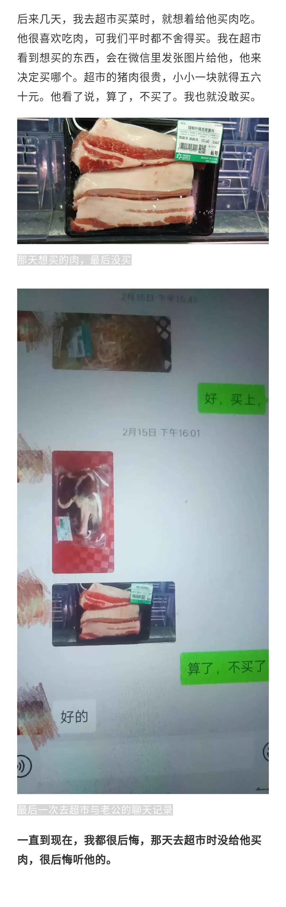
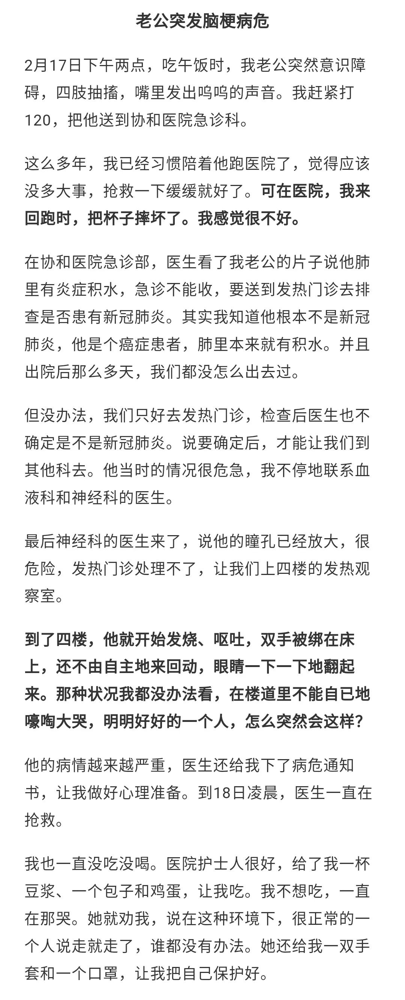
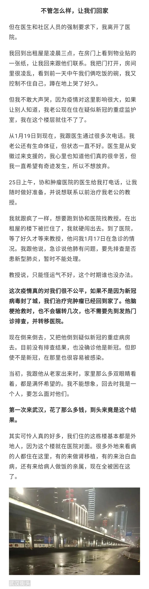
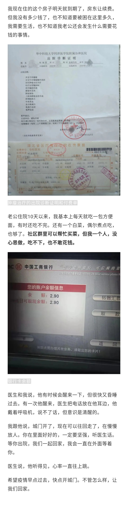

资讯详情
原文链接 备份链接 7271 来源：正和岛 作者：叶青 03-01 1、武汉疑似病例降到393例 29日，农历二月初七。阴天。29日，全国新增确诊病例573例，新增死亡病例35例（湖北34例，河南1例），新增疑似病例132例。当日新增治愈 …








「相关文章」
被拒绝在上海写字楼外的武汉人
95后一线护士：盛放在武汉病房的葵花
**「征集活动」
**
无论你是医护人员、患者，还是普通人
都可以点击“阅读原文”和我们联系
分享你与疫情的故事

「联系我们」
欢迎关心武汉疫情和“云林街十七号”的你
进入我们的微信群
后台留言“进群”
加志愿者微信
原文链接 备份链接 7271 来源：正和岛 作者：叶青 03-01 1、武汉疑似病例降到393例 29日，农历二月初七。阴天。29日，全国新增确诊病例573例，新增死亡病例35例（湖北34例，河南1例），新增疑似病例132例。当日新增治愈 …
原文链接 备份链接 澎湃新闻记者 段彦超 实习生 王萨丽 “刚到武汉市江夏区方舱医院时，每天轮轴转的高强度工作，我和同事感觉有些吃不消。后来，情况逐渐改善，医护队伍逐渐进入正常的工作状态。”2月24日，国家（河南）中医医疗队成员、河南中医 …
原文链接 备份链接 在潜江第五周（2月18日—2月24日）的记录，21日空缺，为朋友讳。仍然回不了武汉。 2月18日 这两天看新闻很少。偶尔上微博，几乎不看朋友圈。唯一持续跟踪的，是疫情数据和省市文件的更新。数据相对固定，文件更新太多了， …
原文链接 备份链接 24.02.2020本文字数：4461，阅读时长大约7.5分钟 导读：2月19日，也是应勇、王忠林履新一周的日子。这一天，微博平台上有关新冠肺炎患者的求助信息清零了。 作者 | 第一财经 胥会云 北京小汤山医院启用后 …
原文链接 备份链接 经历了“封城”一个月的武汉，到底怎么样了? 全文2100字，阅读约需4分钟 点击下图进入阅读新京报特别策划 *数据新闻编辑 **陈华罗、李媛 新媒体设计 高俊夫、李亚珍 校对 何燕* ▲300秒回顾武汉战疫：宏大数 …